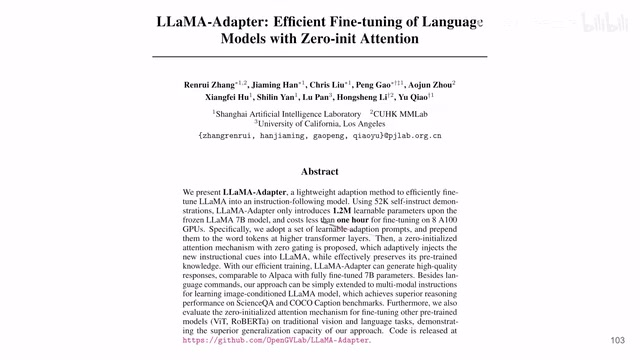
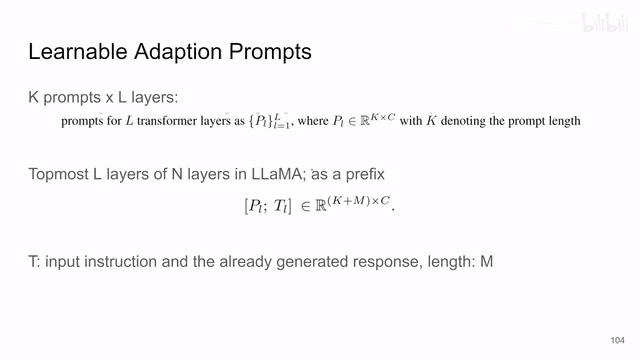
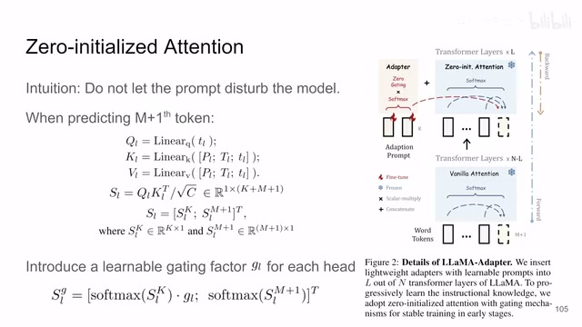
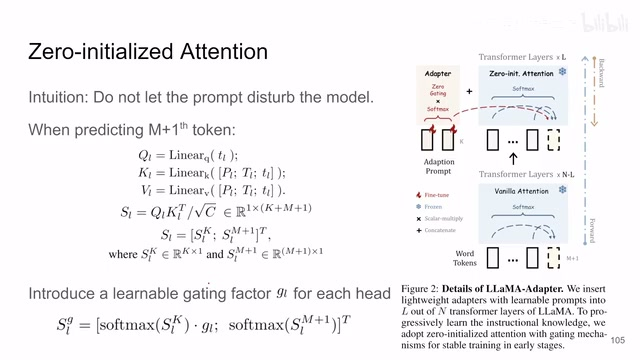
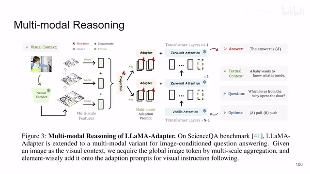
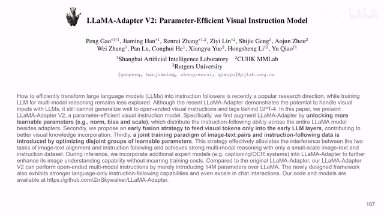
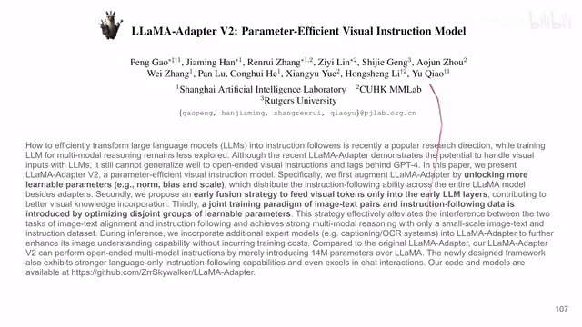
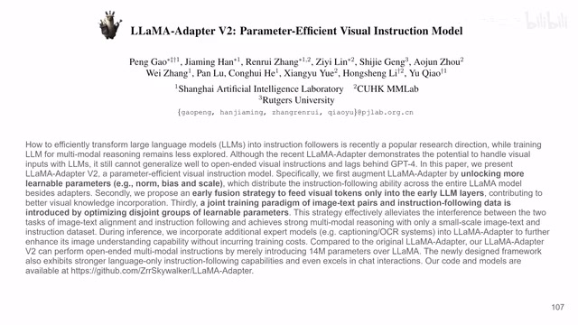

← 返回阅读库 · 原论文目录
论文讲解阅读文档 · 多模态语言模型 · v042
LLaMA-Adapter: Efficient Fine-tuning of Language Models with Zero-init Attention
视频时长 00:04:21；讲解文字 1,988 字符；提取讲解画面 8 张。按视频原顺序阅读，每段文字保留时间戳。
文字来自整段视频的自动语音转写，按自然停顿分段，并与 PPT / 论文页面 / 演示画面对齐。未将讲解压缩为摘要；术语、数字和口述公式请结合画面及原论文核对。 阅读稿已校正规范部分明确术语误识别；原始逐字稿和每处修改记录另行保留。
讲解画面为源视频截图（640×360），不是可编辑 PPT 文件。全片按每秒 2 帧扫描内容变化，逐步展开页保留；连续动画保留代表画面。清晰度受源视频限制。
下载完整资料包 · 含离线 HTML、PDF、Word、全部 PPT 画面和字幕。
原论文与材料
LLaMA-Adapter V2: Parameter-Efficient Visual Instruction Model · 下载完整 PDF（15 页）
LLaMA-Adapter: Efficient Fine-tuning of Language Models with Zero-init Attention · 下载完整 PDF（30 页）
按时间阅读
00:00:00–00:00:21 · 画面 001

00:00:00–00:00:21 · 画面 001大家好 今天我们来快速说一篇论文 LLaMA-Adapter Efficient Fine-tuning of Language Models with Zero-init Attention 读这篇论文主要是学一种 Prompt 通过 Prompt 来 fine-tune 我们的 Language Model 那么再次说明我也没有任何自然语言处理的背景也没有做过任何相关的事情所以我们这里还是只是学一个方法我们看到本文使用的思路就是我们通过在 Transformer 推断的时候给它加入一些 Prompt Token
00:00:21–00:01:09 · 画面 002

00:00:21–00:01:09 · 画面 002加上一些关键词引导词安全词我们的 transformer 因为有 self-attention 的存在它受到了一些特定词的刺激那么它的行为呢就会发生改变那这里呢作者都的选择是我每一层增加 k 个 prompt 然后呢加在这个 transformer 最高的这 l 层这 l 是小于这个 transformer 一共的这个 n 层的那么这样子的每一层呢就是一个 k 乘 ck 是这个 prompt 的长度然后 c 是这个一个 token 它的这个深度嘛然后呢这些 prompt 要加在哪里呢作者说加在每一句的最开始也就是作为一个前缀送到一个句子里面那么然后你就可以开始训练了吗 transformer 里面的权重你就不要动它那么你只需要去训练我们的加的这个 prompt 它的这个权重就好了
00:01:09–00:03:09 · 画面 003

00:01:09–00:03:09 · 画面 003但是呢在本文的实现中呢我们并不是说直接的随机初始化这个 prompt 加到这个 transformer 里面然后就开始训练了就结束了并不是这样的那这里呢作者引入了这个 zero initialized attention 那为什么要引入它呢很简单的道理因为一开始你的 prompt 是随机的嘛没有任何意义嘛它呢你直接加进去可能就会扰乱我们已经训练好了这个 transformer 的结果那么为了避免这种情况呢作者通过 attention 来控制一下这些新加的这些 prompt 它对于我们原来的模型的影响那最简单的道理就是我把新加的这一块的 prompt 对 attention 的贡献给它改成 0 就好了嘛这是最简单的方法那具体的方法就是当我们预测 DM 加一个 token 的时候我们做 attention 的时候 query key value
都查出来之后这个 TL 就是我们要预测的那个 token然后 attention 做完这个 attention 矩阵可以被拆分成两个部分一个是前面的我们要学的 K 个 token对于新生成的 token它的 attention剩下的就是原来的这些 token它们的 attention那么为了避免这一块对我们的后面的 attention 的生成一开始有影响这里作者就引入了一个这个 learnable gating factor GL它的初始值就是零它是一个可学习的引入它之后用它来控制我们新加入的这些 prompt
它对于整个 attention 的贡献同时你注意到我们原来的这些 token和新加的 prompt token它们是单独做 softmax那么经过这样一来得到 attention 的矩阵你再过 linear layer你再去真正的把 attention 用起来正经的 transformer 就可以了如果你恰好熟悉 control net zero convolution它的精神是一样的包括 LoRA 里面为什么我们一开始它的初始化的权重都是零对吧都是一样的我们都是希望忠实的从原始讯号的权重开始慢慢调
00:03:09–00:03:25 · 画面 004

00:03:09–00:03:25 · 画面 004而不是说一下子我给它加入一个大的随机的扰动那么这个就是本文主要的技术了还有一个小的细节就是这个 gating factor 这个 GL 是对每一个 head 都单独有一个所以每一层它应该是一个 vector 这是一个小的细节那么当然了本文作者还探讨了说我们如何把这个 multimodality reasoning 在已经有的这个 LLaMA 的基础上把更多多模态的东西融进来那它的方法也很简单对吧就是还是在我们这个 adapter 里面
00:03:25–00:03:53 · 画面 005

00:03:25–00:03:53 · 画面 005做文章嘛对吧你的 adapter 里面融上其他的模态的比如说图像模态的信息融进来就好了那么这个呢是第一代的这个 LLaMA-Adapter 感兴趣的朋友呢非常推荐你到原文去看他的实验具体的实现细节他也有代码那么然后呢我们来看到第二篇就是 LLaMA-Adapter V2 那这一篇呢相对于第一篇呢就是你看到他允许有更多可以学习的东西
00:03:53–00:04:10 · 画面 006

00:03:53–00:04:10 · 画面 006那么第二点呢就是在相对浅的层更早的就把这些视觉的 token 加进来了那么如果你是从事这方面的研究呢可以沿着他们的这个论文继续读下去那我不是从事这方面的我就不读了好了那么这就是一个非常快速的视频还是主要是学方法那么感谢您的收看再见
00:04:10–00:04:11 · 画面 007

00:04:10–00:04:11 · 画面 00700:04:11–00:04:21 · 画面 008

00:04:11–00:04:21 · 画面 008转写与来源说明 · 4 个自动复核提示
保留 52 个原始语音片段，4 个片段触发自动复核提示。提示仅用于定位可能的术语、重复或识别问题，不等于已确认错误。
讲解画面为源视频截图（640×360），不是可编辑 PPT 文件。全片按每秒 2 帧扫描内容变化，逐步展开页保留；连续动画保留代表画面。清晰度受源视频限制。
原视频：paper/合集_2026-10-16_多模态语言模型/[论文速览]LLaMA-Adapter Efficient Fine-tuning..Zero-init Attention[2303.16199].mp4
SHA-256：28c06f0fe025efe296f457c19edf67cb088ea7bee86245c7affac8abf02f8902
它的 attention
它们的 attention
你再过 linear layer
zero convolution
全文按视频语音与画面制作。原论文可从上方链接下载；完整资料包保留全文、原始逐字稿、字幕和校对记录。